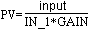

Ratio function block execution
In Cascade (Cas) or Automatic (Auto) mode, the Ratio function block computes the block output (OUT) from a ratio setpoint, an input, and a gain value:
where:
IN_1 is the input to which the ratio setpoint (SP) is applied after filtering with the RA_FTIME parameter value.
GAIN is the gain value used to range-adjust the result and control the decimal point location of the ratio.
The following diagram shows the timed response of the Ratio function block:
Select how the block executes by configuring input filters, tracking variables, setpoint limits, and output limits. The block's mode determines setpoint and output selection.
Input filtering
Set the ratio filter time constant (RA_FTIME) to filter IN_1. Set the PV filter time constant (PV_FTIME) to filter IN. When IN is not connected, and BKCAL_IN and IN_1 are good, PV status is good.
Calculation of PV
In the Ratio function block, PV is the actual ratio. It is calculated as follows:

The parameter used for input is:
IN (filtered by PV_FTIME) if it is wired (its status is not BadNotConnected)
BKCAL_IN if it is wired and IN is not wired.
OUT if neither IN or BKCAL_IN is wired.
IN_1 is filtered by RA_FTIME before it is used in the calculation. PV is constrained within the EU range of PV_SCALE.
If the block is in MAN mode and control option Act on IR is selected, the SP is calculated to prevent process bumps even if the control option SP-PV Track in MAN is selected.
Tracking
You can specify output tracking with control options and parameters.
The Track Enable control option (CONTROL_OPTS) must be True (1) for the track function to operate. When the Track in Manual control option is True, tracking can be activated and maintained when the block is in Manual mode. When Track in Manual is False, the operator can override the tracking function when the block is in Man mode. Activating the track function causes the block's actual mode to go to Local Override (LO).
The tracking value parameter (TRK_VAL) specifies the value to be converted and tracked into the output when the track function is operating. The tracking scale parameter (TRK_SCALE) specifies the range of TRK_VAL.
When the track control parameter (TRK_IN_D) is True and the Track Enable control option is True, the TRK_VAL input is converted to the appropriate value and output in units of OUT_SCALE.
Setpoint and Output Limit Constraints
During download OUT_HI_LIM, OUT_LO_LIM, SP_HI_LIM, and SP_LO_LIM are set to their configured values. If you have not changed these values from their defaults they are set as follows during the first execution of the block:
OUT_HI_LIM is set to OUT_SCALE(EU100)
OUT_LO_LIM is set to OUT_SCALE(EU0)
SP_HI_LIM is set to PV_SCALE(EU100)
SP_LO_LIM is set to PV_SCALE(EU0)
During runtime the limits are restricted as follows:
OUT_HI_LIM is restricted to OUT_SCALE(EU100) + 0.1 × (OUT_SCALE(EU100) - OUT_SCALE(EU0)).
OUT_LO_LIM is restricted to OUT_SCALE(EU0) - 0.1 × (OUT_SCALE(EU100) - OUT_SCALE(EU0)).
SP_HI_LIM is restricted to PV_SCALE(EU100) + 0.1 ×( PV_SCALE(EU100) - PV_SCALE(EU0)).
SP_LO_LIM is restricted to PV_SCALE(EU0) - 0.1 × (PV_SCALE(EU100) - PV_SCALE(EU0)).
The SP or OUT parameters are not changed as a result of changing the scale or limits. However, if OUT violates the new limits OUT is forced within the limits on the next execution of the block.
Setpoint Selection and Limiting
Setpoint selection is determined by the mode. The following diagram shows the method for setpoint selection:
You can limit the setpoint by configuring the SP_HI_LIM and SP_LO_LIM parameters. In Cas mode, the setpoint comes from the CAS_IN input. In Auto mode, the setpoint is adjusted by the operator, and you can apply rate of change limits to the setpoint (SP_RATE_DN and SP_RATE_UP).
Output Selection and Limiting
Output selection is determined by mode. In Auto or Cas mode, the output is computed by ratio control. In Man mode, the output can be entered manually.
You can apply limits to the output by configuring the OUT_HI_LIM and OUT_LO_LIM parameters.
Bumpless Transfer on Mode Transitions
The BAL_TIME parameter determines bumpless transfer operations. When the mode transitions from a non-Auto mode to Auto mode or from any mode to Cas mode, an internal balancing bias is calculated that forces the block to initialize its output to a value that does not bump the output. The internal bias is ramped to zero over a period of time specified by BAL_TIME. When BAL_TIME is zero, the internal bias and ramp are not applied. When BAL_TIME is non-zero, the internal bias and ramp are applied.
When internal bias and ramp are not applied, the setpoint is back-calculated in all modes except Auto and Cas. However, there are cases when back calculation cannot be accomplished (such as when IN_1 is zero or when CAS_IN is connected to the output of a block that does not have initialization capability). Therefore, make sure the value in BAL_TIME provides a reasonable balancing time.
Block Errors